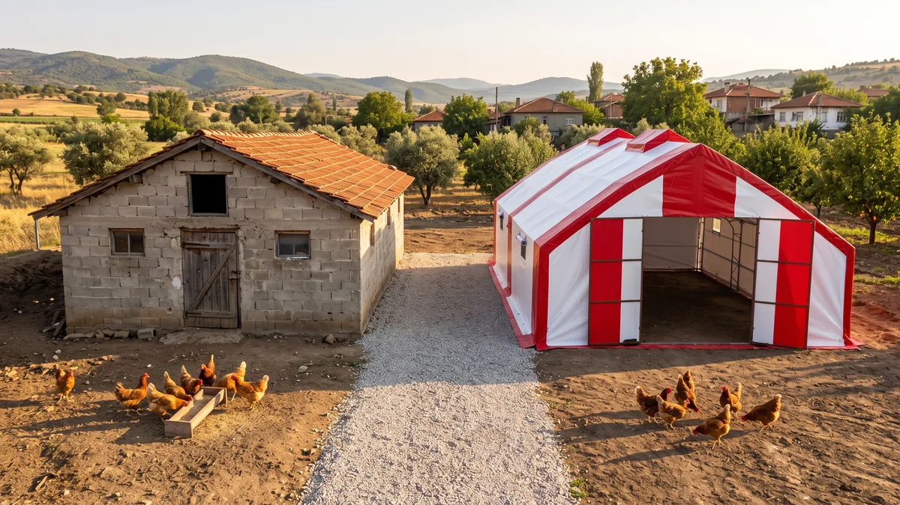

Kümes maliyeti: betonarme mi, çadır kümes mi daha hesaplı?
Kümes yapmak kaç paraya mal olur? Betonarme kümes ile çadır kümesi maliyet, süre, ruhsat ve amortisman üzerinden gerçek fiyatlarla karşılaştırdık.

Kümes yapmayı kafaya koydunuz. Belki 500 tavukla başlayacaksınız, belki bin. Aklınızdaki ilk soru belli: bu iş kaça mal olur? Hemen peşinden ikincisi gelir: betonarme mi yaptırsam, çadır kümes mi alsam?
İkisini de yakından biliyoruz. Biz çadır kümes üretiyoruz, orası açık; ama bu yazıda betonarmeyi kötüleyip geçmeyeceğiz. Betonarmenin çadırın hiçbir zaman veremeyeceği artıları var: onlarca yıl ömür, bankaya teminat gösterilebilme, arazinin değerine değer katması. Öte yandan maliyet, süre ve esneklik tarafında tablo ciddi biçimde çadır lehine. İkisini de rakamlarıyla göreceksiniz.
Aşağıda iki seçeneği m² maliyeti, teslim süresi, ruhsat yükü, taşınabilirlik ve amortisman üzerinden yan yana koyduk. Çadır tarafındaki rakamlar kendi fiyat tablomuzdan geliyor; yani gerçek satış fiyatları. Betonarme tarafı piyasa gözlemi olduğu için aralık olarak verildi — kesin rakamı ancak kendi bölgenizde, kendi projenizle öğrenirsiniz.
Kümes maliyeti neye göre değişir?
Fiyat sormadan önce bir hesabı oturtmak gerekiyor: kaç tavuk besleyeceksiniz ve bunun için kaç metrekare lazım?
Barınak içinde standart yoğunluk metrekare başına yaklaşık 7 tavuktur. Hesap basit, hedef sayıyı 7'ye bölün: 500 tavuk için 70 m² yeter, 1.000 tavuk kabaca 140-145 m² ister. Gezen tavuk sistemi kuracaksanız hayvan başına daha geniş alan bırakmanızı öneririz. Aynı yapıda kapasite düşer, doğru; ama hayvan sağlığı ve yumurta kalitesi bunun karşılığını verir, gezen tavuk yumurtası pazarda da farklı fiyatlanır.
Metrekare belli olunca toplam yatırım üç kaleme ayrılır. En büyüğü yapının kendisi, yani betonarme bina ya da çadır kümes; bu yazının konusu da bu. Onu zemin ve altyapı izler: su hattı, elektrik, gerekiyorsa beton ya da kilit taşı zemin. En sona ekipman kalır. Yemlik, nipel suluk, folluk, fan derken manuel mi otomatik mi sorusu bütçeyi ayrıca oynatır.
Sahada en sık gördüğümüz hata şu: üretici bütün parayı binaya gömüyor. Sıra ekipmana ve ilk yem stoğuna gelince sermaye bitmiş oluyor; tavuk daha yumurtlamadan borçlanma başlıyor.
Yapı maliyetini düşük tutmak çoğu zaman işin kendisini kurtaran karardır. Bu cümleyi aklınızda tutun, amortisman bölümünde tekrar karşınıza çıkacak.
Betonarme kümes maliyeti 2026'da ne kadar?
Betonarmede masraf tek kalem değildir. Sırayla yazalım: zemin etüdü ve proje çizimi, statik hesap, ruhsat harçları, hafriyat, temel, duvar, çatı, yalıtım, kapı ve pencereler, sıva, boya, bina içine gömülecek elektrik ve su tesisatı. Bir de bütün bunların işçiliği var. Usta bulmak her ilçede aynı kolaylıkta değil; bulunca da takvimine siz uyarsınız.
Size kesin bir m² fiyatı vermek yanıltmak olur. Demir, çimento ve işçilik aydan aya değişiyor; aynı bina Trakya'da başka rakama, Doğu Anadolu'da başka rakama çıkıyor. Yine de kaba bir çerçeve çizelim: 2026 itibarıyla basit bir tarımsal yapıda bile m² maliyeti beş haneli rakamlara dayanmış durumda. Sahada duyduğumuz projelerde 140 m²'lik bir betonarme kümesin toplamı çoğunlukla 1 milyon TL'nin üzerinde; malzeme kalitesine ve bölgeye göre bunun bir hayli üstüne çıkan da var. Bu rakamları kesin fiyat olarak değil, pusula olarak okuyun.
Para bir yana, takvim de var. Proje çizimi, ruhsat başvurusu, onay derken inşaata başlamadan haftalar geçer. İnşaatın kendisi havaya bakar: Karadeniz'de yağmur beton dökümünü erteler, İç Anadolu'da don işçiliği durdurur. Temelden anahtar teslime aylarla ölçülen bir süreç bu. Bahar sezonuna yetişeyim derken sonbaharı bulan projeler gördük.
Ruhsat tarafında tarımsal yapılar için kolaylaştırılmış prosedürler olabiliyor; ancak bu, il ve ilçeye göre değişen bir konu. Başlamadan belediyenize ve il tarım müdürlüğüne danışın. Projeye girişip ruhsatta takılan üreticiyle az karşılaşmadık.
Bir şey daha: betonarme yaptığınız an o araziye demir atmış olursunuz. Arazi kiralıksa ya da beş yıl sonra nerede olacağınızdan emin değilseniz, bu kalıcılık avantaj olmaktan çıkar, yüke döner.
Çadır kümes fiyatları ne kadar?
Burada rakamlar tahmin değil; kendi satış tablomuzdan geliyor. Fiyatlara nakliye ve kurulum dahildir, 2026 için geçerlidir:
| Ölçü | Alan | Kapasite (barınak) | 3 kat yalıtım | 4 kat yalıtım |
|---|---|---|---|---|
| 7 x 10 m | 70 m² | ~500 tavuk | 95.000 TL | 105.000 TL |
| 7 x 14 m | 98 m² | ~680 tavuk | 110.000 TL | 135.000 TL |
| 7 x 20 m | 140 m² | ~980 tavuk | 185.000 TL | 195.000 TL |
| 10 x 30 m | 300 m² | ~2.100 tavuk | 325.000 TL | 395.000 TL |
| 10 x 40 m | 400 m² | ~2.800 tavuk | 425.000 TL | 495.000 TL |
Ara ölçüler de var; 7x30 ve 10x20 dahil tam liste fiyat sayfamızda duruyor. 500 tavukla başlamayı düşünenler için 500 tavukluk model, bin civarını hedefleyenler için 1000 tavukluk tavuk çadırı sayfası ölçüleri ayrıntılı anlatır; 750 tavukluk ve 2000 tavukluk kapasiteler için de ayrı sayfalar hazırladık.
m² hesabına dönelim. 70 m²'lik çadır 95.000 TL ise metrekaresine yaklaşık 1.350 TL ödüyorsunuz. Ölçü büyüdükçe birim maliyet düşer; 300 m² ve üzeri modellerde m² başına 1.100 TL'nin altına iner. Tavuk başına bakarsanız yatırım 150-190 TL bandında kalıyor. Betonarmede aynı hesap, projeye göre bunun kat kat üzerine çıkıyor.
Ucuz diye derme çatma bir şey beklemeyin. İskelet 40x40 mm, 2 mm et kalınlığında galvaniz profilden makaslı (kemerli) sistem; üzerinde 650 g/m² TSE damgalı branda, içeride 180 g antibakteriyel yıkanabilir astar, arada 3 ya da 4 kat alüminyum bizafol yalıtım var. Bu yapı standart çadırlara göre 3 kat dayanıklıdır; kar, rüzgâr ve yağmurda çökme yapmaz. İç Anadolu ayazında kışlayacaksanız 4 kat yalıtımı öneririz. Ege ve Akdeniz kıyısında 3 kat çoğunlukla yeter. Karadeniz'de asıl dert nem olduğundan yalıtımla birlikte havalandırmayı doğru kurmak gerekir; kurulumda buna göre yönlendiriyoruz.
Fiyata dahil olmayanları da açık yazalım: zemin, su ve elektrik altyapısı size ait. Yemlik, nipel suluk, folluk ve fan talebe göre eklenir; manuel ya da otomatik seçenekleri var. Türkiye'nin 81 iline gidiyoruz, sipariş sonrası 10 gün içinde kurulu teslim ediyoruz, üretim 2 yıl garantili. Üretimi ve kurulumu DEHA Çadır yapıyor; ekibi merak ederseniz hakkımızda sayfasına bakabilirsiniz.
Betonarme mi çadır kümes mi? Yan yana tablo
Aynı işi gören iki yapıyı kalem kalem karşılaştıralım. Örnek ölçü olarak 140 m²'yi, yani yaklaşık 980 tavukluk kapasiteyi aldık.
| Kriter | Betonarme kümes | Çadır kümes |
|---|---|---|
| Yatırım (140 m²) | Çoğu projede 1 milyon TL üzeri; bölge ve malzemeye göre değişir | 185.000 - 195.000 TL, nakliye ve kurulum dahil |
| Teslim süresi | Proje + ruhsat + inşaat; aylar sürer | Sipariş sonrası 10 gün içinde kurulu teslim |
| Ruhsat / izin | Proje, statik hesap ve ruhsat süreci gerekir | Demonte yapı; çoğu bölgede ruhsat istenmez, yine de yerel yönetime danışın |
| Taşınabilirlik | Yok; yapı araziye bağlı | Sökülür, taşınır, başka arazide yeniden kurulur |
| Zemin şartı | Temel zorunlu | Toprak, şap, beton, kilit taşı; her zemine kurulur |
| Ömür | Onlarca yıl, nesillere kalır | Galvaniz iskelet uzun ömürlü; branda yıprandığında yenilenir; 2 yıl üretim garantisi |
| Banka teminatı | Tapuya işlenen bina kredi teminatı gösterilebilir | Menkul sayılır; teminat olarak kabulü zordur |
| Büyütme | Ek inşaat ve yeni ruhsat gerekir | İkinci çadır eklenir ya da ölçüye özel üretimle büyütülür |
Kısacası çadır kümes hızda, maliyette ve esneklikte önde; betonarme kalıcılıkta ve finansman tarafında güçlü. Hangi satırın sizin için ağır bastığı arazinize, sermayenize ve kaç yıllık plan yaptığınıza bağlı — aşağıda ikisini de açıyoruz.
Betonarmenin hakkını verelim: nerede daha iyi?
Bu yazıyı çadır kümes üreten bir firma yazıyor, farkındayız. Tam da bu yüzden betonarmenin güçlü yanlarını atlamadan sayacağız; yoksa size dürüst davranmamış oluruz.
En başta ömür var. Doğru projelendirilmiş, doğru dökülmüş bir betonarme bina onlarca yıl ayakta kalır; siz bırakırsınız, çocuğunuz devam eder. Hiçbir çadır bu iddiada bulunamaz.
Finansman tarafı da öyle. Tapulu arazinize ruhsatlı bir bina diktiğinizde bu bina bankalar nezdinde gayrimenkuldür: kredi başvurusunda teminat gösterilebilir, işletmenizin kayıtlı değerini büyütür. Çadır kümes menkul maldır; taşınabilir olmasının bedeli, bankanın ona betonarme gözüyle bakmamasıdır. Kredi ile büyüme planlayan bir işletme için bu fark küçümsenecek şey değil.
Arazi değerini de ekleyin: üzerinde ruhsatlı kümes binası olan bir tarla, satış gününde boş tarladan farklı fiyatlanır.
Bir de yapısal bir konu var. Kalın betonarme duvarın ısı kütlesi yüksektir, yaz sıcağında içerisi daha geç ısınır. Çadırda aynı iş yalıtım katmanları ve havalandırmayla çözülür — çözülür, ama mekanizma farklıdır ve bunu bilerek karar vermek gerekir.
Kime betonarme öneririz? Tapulu kendi arazisinde on yıllar boyu aynı noktada üretim yapacağından emin olan, yapı bütçesi ekipman ve işletme sermayesini sıkıştırmayan, banka kredisiyle büyümeyi planlayan üreticiye. Bu profil sizseniz betonarme ciddi bir seçenektir ve bunu söylemekten çekinmeyiz.
Amortisman hesabı: parayı ne zaman geri alırsınız?
Amortisman kulağa muhasebe dersi gibi gelir ama hesap köy kahvesinde yapılacak kadar basittir: yapıya bağladığınız para, üretimden dönen parayla kaç senede çıkıyor?
Kritik nokta şu: tavuk hangi yapının içinde olduğunu bilmez. Aynı ırk, aynı yem, aynı bakımla betonarme kümesteki tavuk da çadır kümesteki tavuk da aşağı yukarı aynı yumurtayı verir. Gelir iki senaryoda da aynıysa, geri dönüş süresini belirleyen tek değişken yatırım tutarıdır. 185 bin TL'lik yapı, diyelim 1,5 milyonluk bir binadan yaklaşık sekiz kat hızlı amorti eder; yumurta fiyatı o dönem ne olursa olsun bu oran değişmez.
Aradaki farkın neler yapabildiğine bakın. 140 m² örneğinde betonarme ile çadır arasında kabaca 1 milyon TL fark oluşabiliyor. Bu parayla yarka alırsınız, otomatik yemlik-suluk hattı kurarsınız, aylarca yetecek yem stoğu yaparsınız; elinizde hâlâ nakit kalır. Tavukçulukta işletmeyi zora sokan şey çoğu zaman yapının kendisi değil, işletme sermayesinin erken bitmesidir.
Riski de hesaba katın. Pazar beklediğiniz gibi gitmezse, arazi meselesi çıkarsa ya da taşınmanız gerekirse çadır kümesi söker, başka araziye taşır ya da satarsınız; yatırımın bir kısmı geri döner. Betonarme olduğu yerde kalır.
Devlet desteği tarafında Tarım ve Orman Bakanlığı'nın hayvancılık destekleri ve Ziraat Bankası'nın sübvansiyonlu tarım kredileri dönem dönem kümes yatırımlarını kapsıyor. Oranlar ve şartlar sık değiştiği için buradaki hiçbir bilgiyi kesin kabul etmeyin; güncel durumu il tarım müdürlüğünden ya da kurumların resmi kanallarından doğrulayın. Desteklerin bir kısmında ruhsatlı yapı şartı arandığını da duyuyoruz — başvurudan önce bu detayı özellikle sorun.
Karar aşaması: hangi durumda hangisini seçmeli?
İki soruyla başlayın: arazi kimin ve planınız kaç yıllık?
Çadır kümes sizin için mantıklı, eğer:
- Arazi kiralıksa ya da ileride yer değiştirme ihtimaliniz varsa.
- Bu işe ilk kez giriyorsanız ve ters gittiğinde belinizi bükmeyecek bir rakamla denemek istiyorsanız.
- Sermayenin ciddi bölümünü ekipmana, yarkaya ve yem stoğuna ayırmanız gerekiyorsa.
- Bekleyemiyorsanız. Bahar sezonuna yetişme derdi olan için sipariş sonrası 10 günde kurulu teslim fark yaratır.
Betonarme ise şu profile oturuyor: tapulu kendi arazisinde on yıllar boyunca üretim yapacağından emin olan, banka kredisiyle büyümeyi planlayan ve yapı bütçesi işletme sermayesini sıkıştırmayan üretici. Üstteki bölümde saydığımız artılar sizi anlatıyorsa gönül rahatlığıyla betonarmeye yönelin.
Müşterilerimizin en sık sorduğu sorulardan biri şu: önce küçük başlasam, sonra büyütsem olur mu? Olur; çadır kümesin en rahat tarafı bu. 70 m² ile başlayıp birkaç yıl sonra yanına ikinci çadırı kuran üreticiler görüyoruz. Betonarmede aynı esneklik yok — ilk günden nihai kapasiteye göre inşaat yapmanız gerekir, o da bugünden büyük para bağlamak demektir.
Ölçünüze, bölgenize ve bütçenize göre net rakam almak isterseniz WhatsApp hattımız 0552 666 36 06; dilerseniz iletişim sayfasından da yazabilirsiniz. Kısa yanıtlı sık sorulanları ana sayfadaki SSS bölümünde topladık. Ölçüye özel üretim yaptığımız için tablodaki ölçülere sıkışmak zorunda da değilsiniz; arazinize göre çizip fiyatlandırıyoruz.
Sık sorulanlar
Kümes yapmak kaç paraya mal olur?
Çadır kümes için yapı ruhsatı gerekiyor mu?
Çadır kümes fiyatına neler dahil?
Çadır kümes kar ve rüzgâra dayanır mı?
Çadır kümes için beton zemin şart mı?
140 m² kümese kaç tavuk konur?
Projenizi birlikte planlayalım
Kapasitenizi ve bölgenizi yazın; ölçü ve teklifi birlikte çıkaralım.
Kapasitenizi yazın